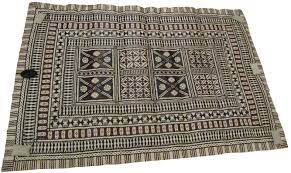

223. Presentation of Fijian mats and tapa cloths to Queen Elizabeth II.
- Function
- Enormous tapa cloth made for the visit of Queen Elizabeth II in 1953 to Fiji, on the occasion of her coronation as Queen of England.
- Presentation to the Queen in an example of Performance art.
- Form
- imagery of royal crowns, geometric patterns, and a floral motif
- Gender Roles
- men: oversea the growth of Mulberry trees that produce the tapas
- Women: turn the bark into cloth
- How it's made
- 1. Bark removed from trees, soaked in water
- 2. clubs are used to beat the strips into long rectangular block to form cloth
- 3. the edges of these smaller pieces are then glued or felted together to produce larger sheets.
- 4. Decorated according to a local tradition: Sometimes stenciled, sometimes printed or dyed